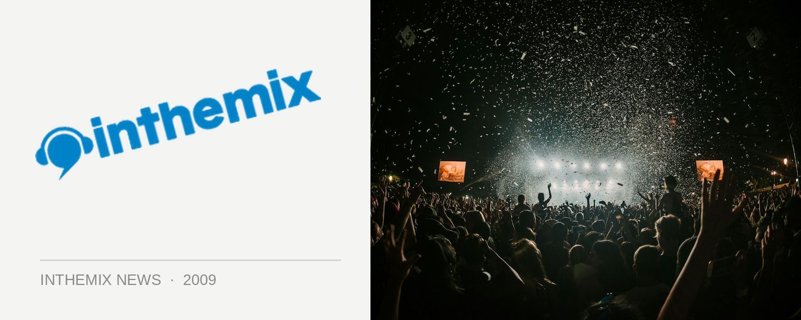

Check out photos from Parklife's second weekend
Parklife ripped through several more cities over the weekend, with Melbourne’s event on Saturday followed by Parklife returning to its original home of Sydney for its biggest party yet, followed by the final leg of the tour in Adelaide. Pictures are now up on ITM, check them out!
> Parklife, Sydney gallery
> Parklife, Melbourne gallery
> Parklife, Adelaide gallery
Punters in Sydney and Melbourne were both greeted with gloomy skies, but luckily the weather held out and we were spared a wash out like at Sydney’s Good Vibrations earlier this year. With a massive assortment of music going down across an equally huge assortment of stages, Empire of the Sun’s spectacular live show again received the lion’s share of attention, but in Sydney it was Dirty Bird frontman Claude VonStroke who proved the sleeper hit for the day.
Stay tuned for plenty more post-event coverage, and if you haven’t done so already don’t forget to check out the best of Parklife ‘week one’ below, as well as the special episode of inthemix.tv that was filmed last weekend at Parklife in Brisbane.
Best Of Parklife Week 1 - The People
Best Of Parklife Week 1 - The Event
Best Of Parklife Week 1 - The Artists
CHECK OUT THE PARKLIFE EPISODE OF INTHEMIX.TV
The national Parklife tour is proudly presented by ITM! Keep your eyes peeled to our Festival Page at inthemix.com.au/parklife for more news, interviews, clips and DJ mixes than you can poke a stick at.